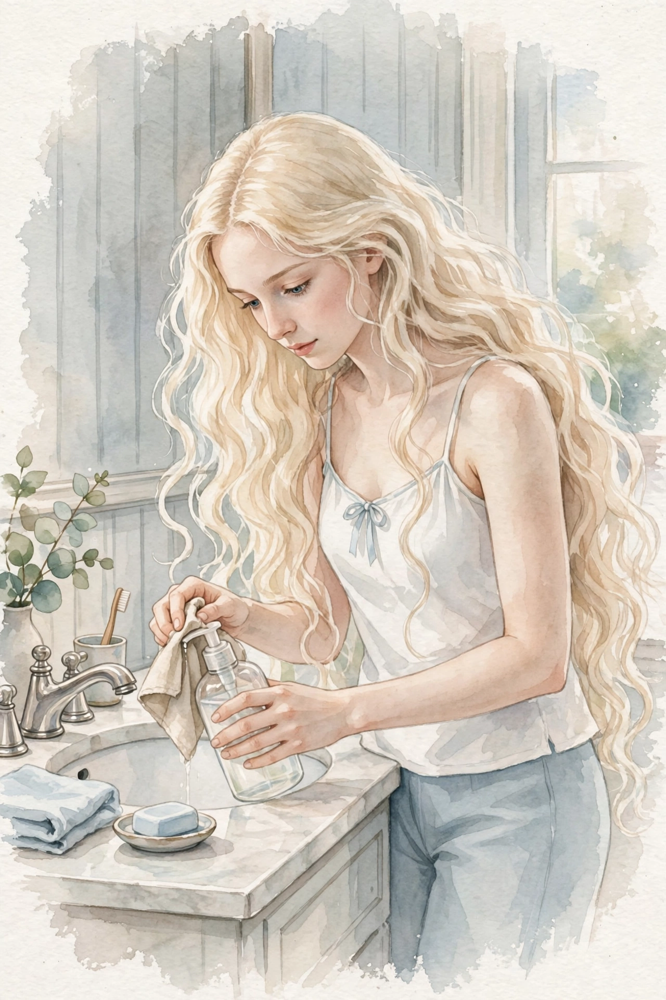

トップ ＞ ボディケア ＞ ポンプが出にくいときの対処と手入れ
ポンプが出にくいときの対処と手入れ

ポンプ式のボディケアアイテムを使っていると、ある日「出が悪い」「押しても少ししか出ない」ということがあります。施術の現場でも、ポンプ容器は日常的に使う道具なので、手入れの手順を持っておくと慌てません。出にくさには必ず理由があり、順番に確かめれば切り分けられます。この記事では、出にくいときの対処の順番を整理します。
まず、原因を切り分ける
出にくさの原因は、大きく3つに分かれます。ひとつは、中身が少なくなって、ポンプが空気を吸っている場合。容器を傾けたり振ったりしたくなりますが、まず残量を確認します。ふたつ目は、ノズルの先で中身が乾いて固まっている場合。みっつ目は、ポンプの管の途中に空気が入っている場合です。
残量があるのに出ない場合は、ノズルの先を確認します。先端に固まった中身が付いているときは、ぬるま湯でやさしく洗い流し、よく乾かしてから押し直します。何度か空押しをすると、管の中身が上がってくることもあります。容器の底に中身が集まるよう、置き場所を平らな場所に変えることも、残量が少ない時期の工夫です。ポンプの頭が回ってロックされていないかも、意外と見落としやすい確認点です。
やってはいけない対処
出ないからといって、強く押し続ける、針のようなもので先端を突く、といった対処は避けます。容器が壊れるだけでなく、中身に異物が入る原因にもなります。ポンプの頭を回して外せるタイプは、外して管のまわりを洗うことができますが、組み立て直すときは、中身に水が入らないよう、よく乾かしてから戻します。
中身が濃いクリームタイプは、もともと出がゆっくりな設計のものもあります。以前と比べて明らかに変わったかどうかが、対処が必要かどうかの判断材料です。新品のときの出方を覚えておくと、変化に気づけます。家族が同じ容器を使っている場合は、使い方の変化が原因のこともあるため、様子を聞いてみることも切り分けの材料になります。
予防は、保管と使い方
出にくさを防ぐには、使ったあとにノズルの先を拭いておく、キャップやカバーを閉める、といった小さな手入れが役立ちます。浴室に置く場合は、水がポンプの頭にかかり続ける場所を避けることも、保管の工夫のひとつです。
対処しても出が戻らない、押す感触が明らかに変わった、という場合は、ポンプ機構そのものの寿命と考える時期です。容器ごと買い替えるか、詰め替え用で容器を新しくするかは、そのアイテムの使い方次第です。道具の状態を見て判断する習慣は、ケア全体の質を支えます。
ポンプの出方は、季節でも変わります。冬場は中身が硬くなって出がゆっくりになることがあります。室温が低い場所に置いている場合は、置き場所を変えるだけで出方が戻ることもあります。原因の切り分けでは、季節と置き場所も確認項目に入れておきます。
詰め替え用の容器として使い続けている場合は、ポンプ部分だけの寿命という考え方もあります。本体の容器は問題なくても、ポンプの頭の部分だけが傷んでいることがあります。その場合は、容器ごとの買い替えが結果的に早道です。
手入れの記録として、対処した日と内容を簡単にメモしておく方もいます。同じ症状が繰り返される場合は、その記録が買い替えの判断材料になります。道具の不調は、記録があると原因の切り分けが速くなります。ポンプ容器は、仕組みが単純な分、状態の変化が読みやすい道具です。日頃の小さな手入れが、寿命を左右します。不調に早く気づくことが、道具を長く使う一番の方法です。状態を見る目が、ケア全体を支えます。

セラフィナ「出にくいときは、残量、ノズル、空気の順に確かめる。突かないのが約束だね」